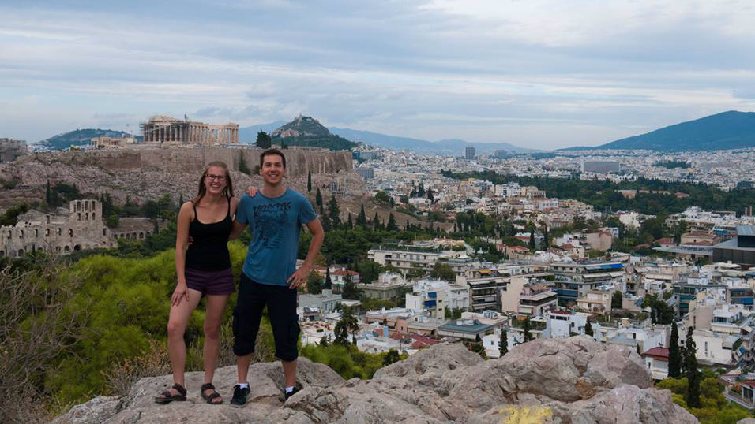
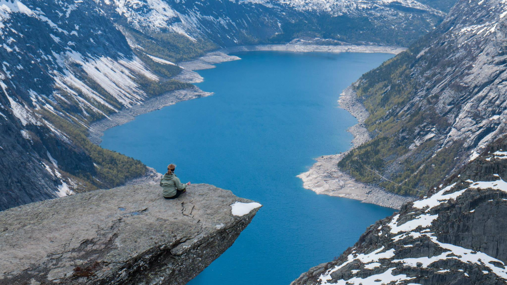
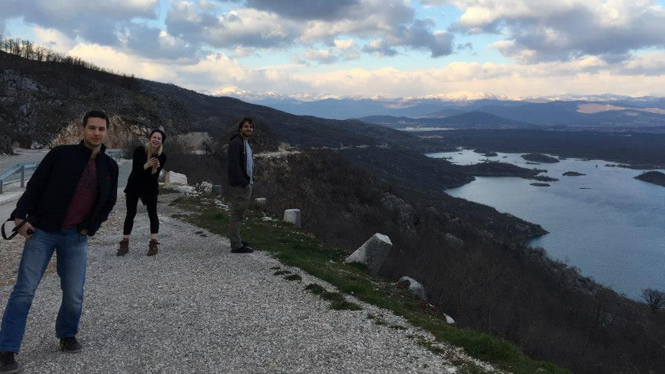

Wesele
CEREMONIA ŚLUBNA
Kościół Máriaremetei
ulica Templomkert 1, Budapeszt, 1029 Węgry
piątek, 8 lipca 2016 roku o godzinie 15:00
WESELE
Petneházy Huszárcsárda
ulica Feketefej 2, Budapeszt, 1029 Węgry
MAPA OKOLICY
Noclegi
Najbliższy hotel:
Petnehazy Club Hotel
ulica Feketefej 2-4.
1029 Budapeszt, Węgry
+36-1-391-8010
Zapytaj się nas o inne opcje hotelowe, oraz noclegi u rodziny i przyjaciół, lub zobacz www.booking.com oraz AirBnB.
O nas
Poznaliśmy się w czerwcu 2013 roku, na imprezie na której żadnego z nas nie miało być. Kasia wiedziała, że będzie na niej pełno informatyków, i jako humanistka obawiała się, że może być nieco nudno... Kristof też nie planował sie pojawić, ponieważ... cóż, miało być na imprezie wielu facetów po informatyce!
Ale obydwoje przyszliśmy – a wtedy już nie było odwrotu.

Spotykaliśmy się całe lato. Nasza pierwszy wjazd razem był do Peak District w północnej Anglii. Byliśmy też na Majorce, w Maroku, Norwegii, Grecji i przejechaliśmy Bałkany z przyjaciółmi.


- 
- 
- 
Wprowadziliśmy się razem trochę ponad rok temu. Na londyńskich przedmieściach w Surbiton uwielbiamy okoliczne parki, promenadę wzdłuż Tamizy i nieodległe, tradycyjne wioski – oraz oczywiście naszych gości!

Kristóf oświadczył się właśnie nad Tamizą, w drodze powrotnej z restauracji, w grudniu 2015. Kasia oczywiście powiedziała tak!
Prezenty
Nie oczekujemy prezentów ślubnych od gości, ale ucieszymy się z pieniężnego wsparcia naszej podróży poślubnej. Podczas wesela będzie możliwość wykupienia tańca z panną młodą. Jeśli chcecie, możecie napisać co chcielibyście nam sprawić w trakcie podróży ślubnej - może być to butelka wina, kolacja, nocleg albo kilka kilometrów lotu!